一款用于解析支付宝/微信账单的Python可视化工具
pip install -r requirements.txtpython main.py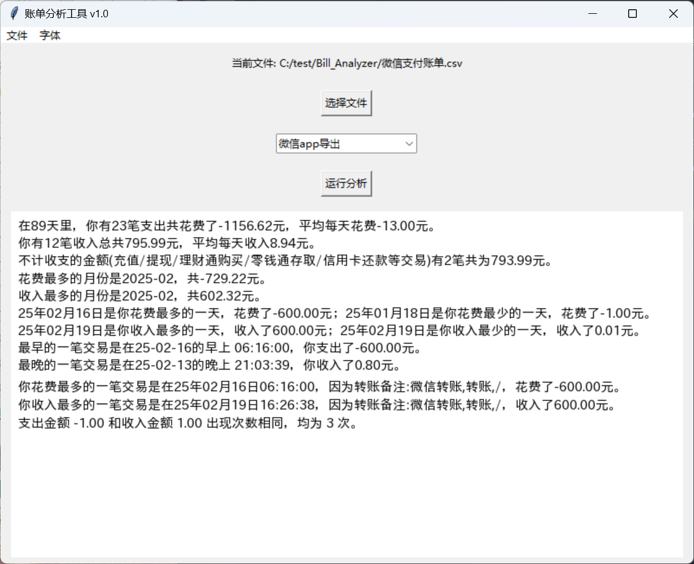
点击选择文件选择对应的文件，之后点击运行分析。
打开浏览器搜索支付宝然后按照指引操作
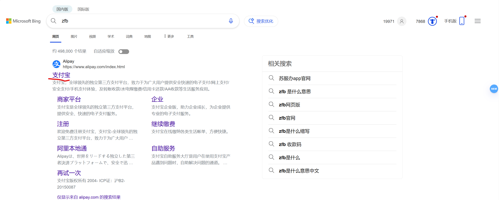
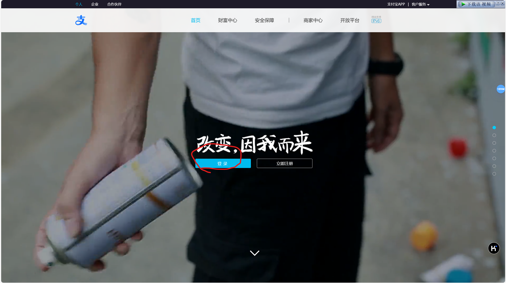
点击后有二维码登陆
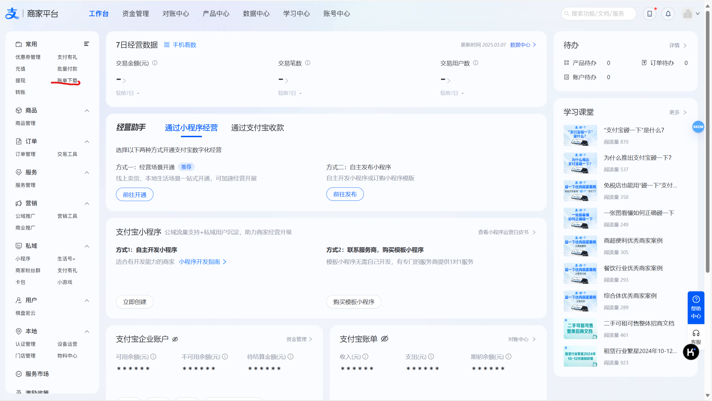
日账单是按天算的而且只能导出一个月的，月账单可以多下几个月，代码测试是用月账单试的
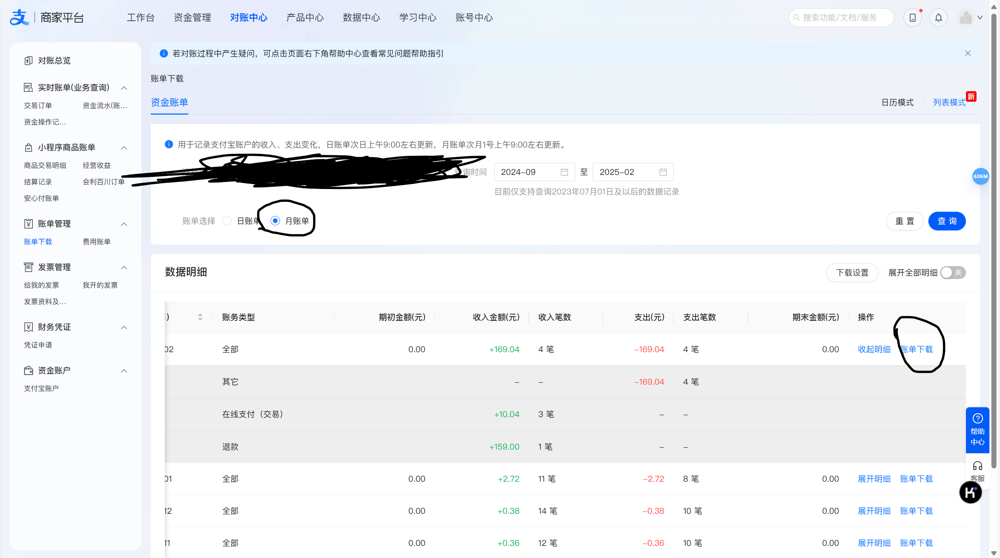
账务明细是要分析的账单
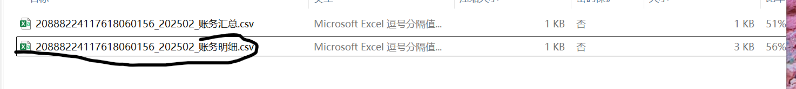
打开支付宝按照指引操作：
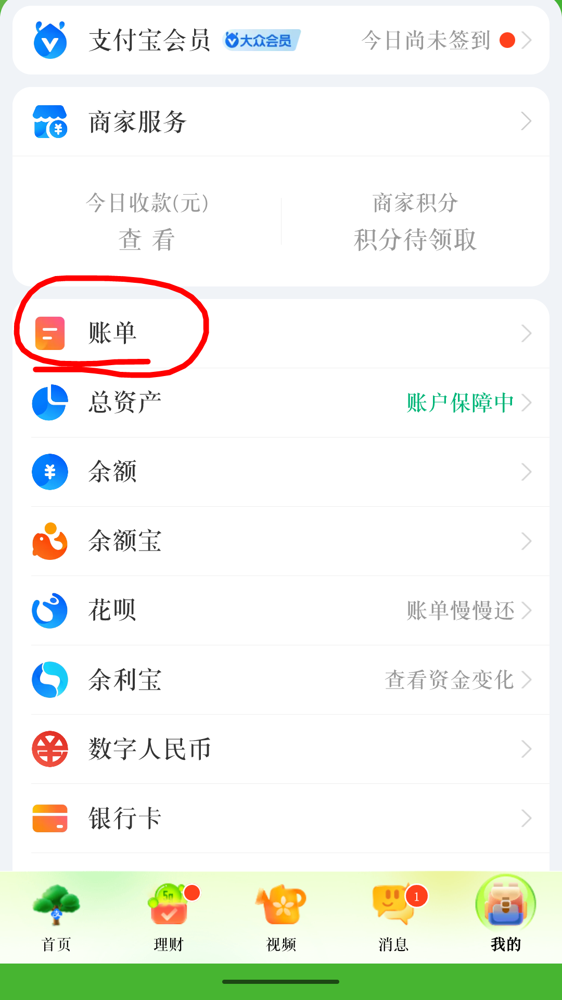
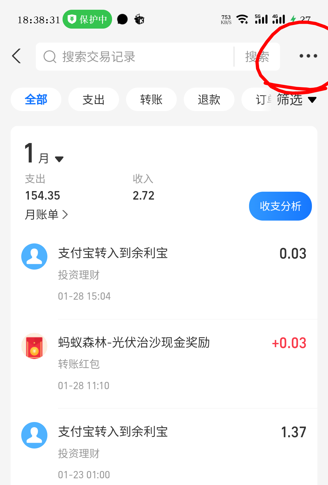
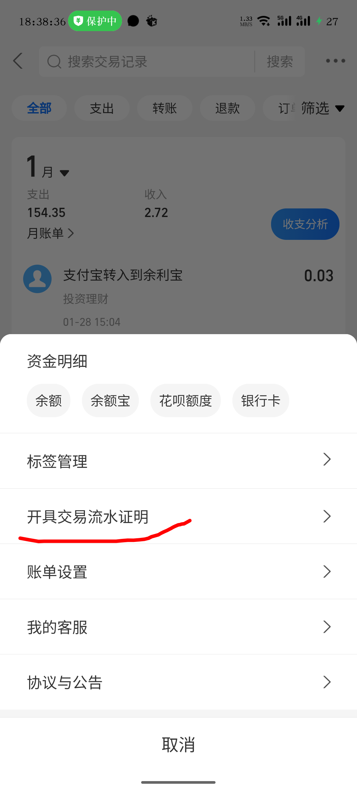
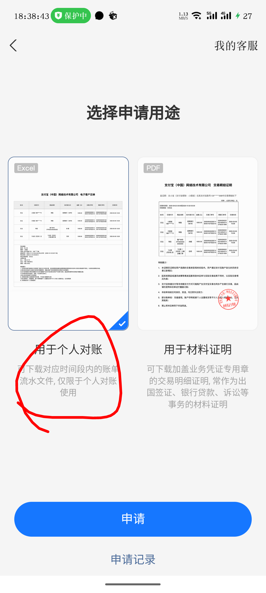
点击下一步后输入邮箱接收账单压缩包，压缩包有密码会发到支付宝上在消息里查看
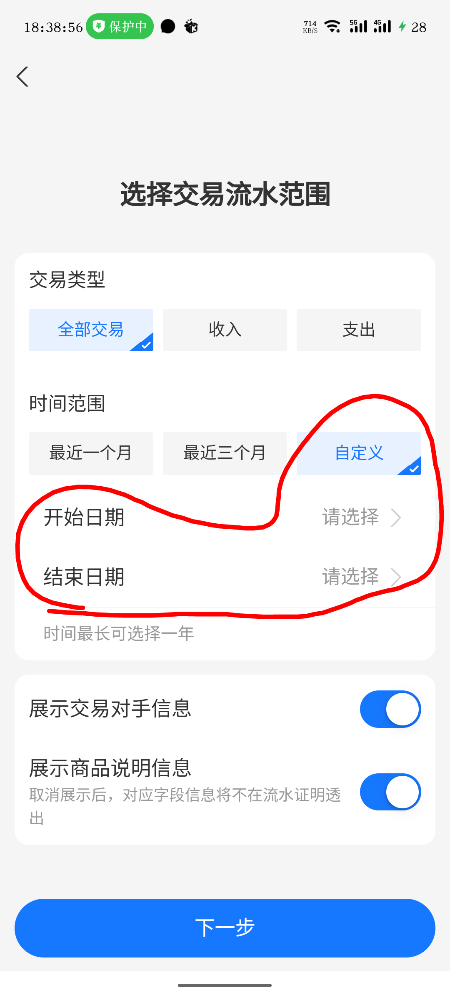
打开微信按照指引操作：
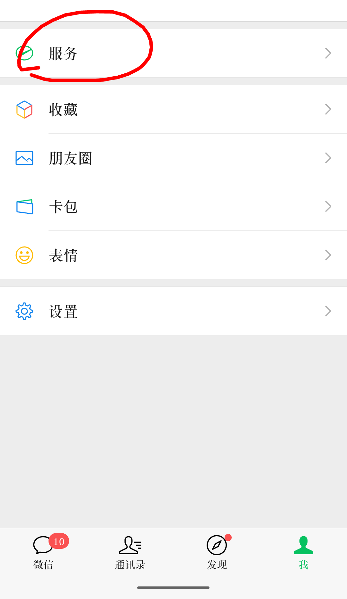
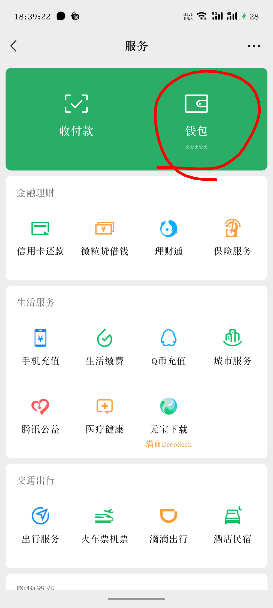
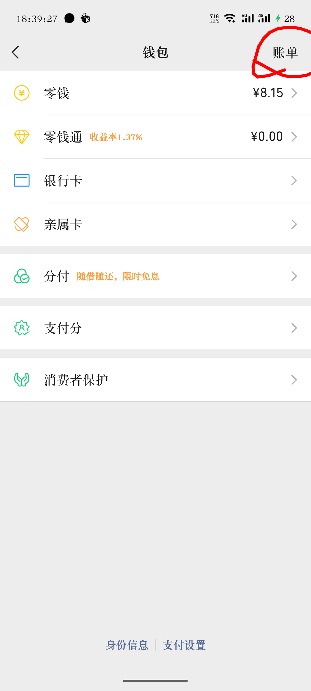
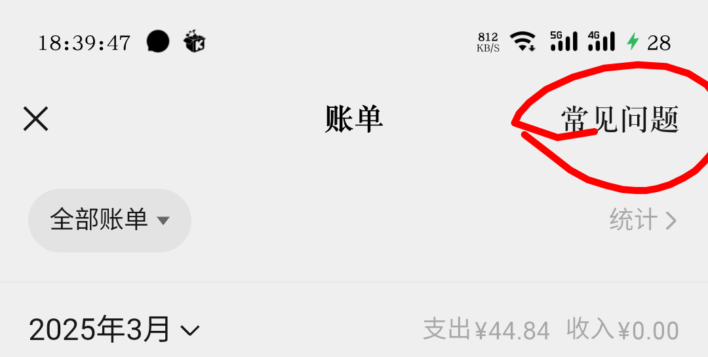
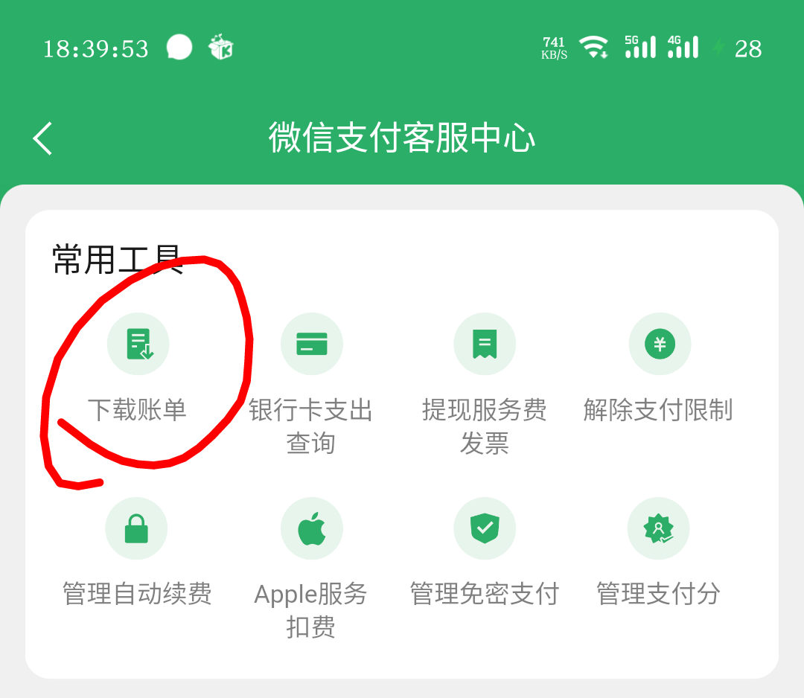
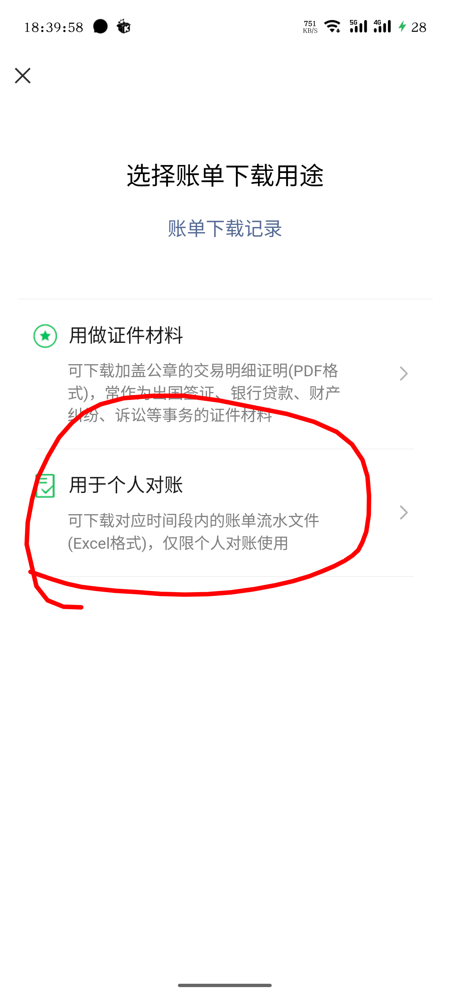
点击下一步后输入邮箱接收账单压缩包，压缩包有密码会发到微信上在消息里查看
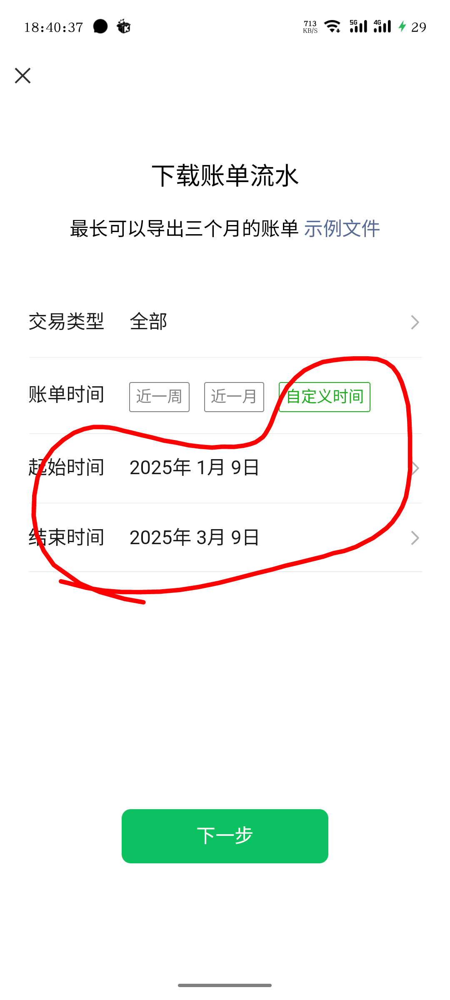
在Bill_Analyzer目录下打开终端输入
pip install pyinstallerpyinstaller build.spec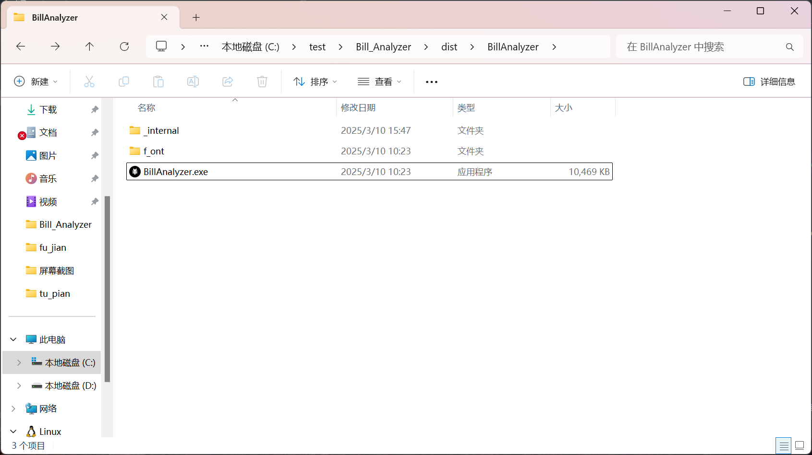
双击BillAnalyzer.exe打开程序upx-5.0.0-win64.zip）
Expand-Archive -Path .\upx-*.zip -DestinationPath C:\upxC:\upxupx --version
# 使用Homebrew安装
brew install upx
# 验证安装
upx --version
# Debian/Ubuntu
sudo apt install upx-ucl
# CentOS/RHEL
sudo yum install upx
# 验证安装
upx --versionpyinstaller --upx-dir=C:\upx build.specpyinstaller build.spec包含来自Remix Icon的图标资源，遵循其 开源协议